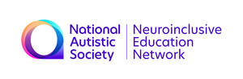

Trade Mark Journal No.2025/034 22 August 2025
UK00004248780 13 August 2025 (9,16,41)

- Class 9
- Education software; Computer software for education; Educational software; Educational computer software; Computer software concerned with children's education.
- Class 16
- School yearbooks; School writing books; Educational books; Textbooks; Printed curricula; Stationery and educational supplies; Three dimensional models for educational purposes; 3D decals for use on any surface; Year planners.
- Class 41
- Vocational education; Vocational education and training services; Education; Education services relating to vocational training; Vocational training; Education and training; Pre-school education; Academies [education]; Vocational training services; Career counseling [education]; Training and education services; Education and training services; Education academy services; Academy education services; Academy services (Education -); Vocational education for young people; Education, teaching and training; Vocational education relating to personal safety; Vocational training courses (Provision of -); Services of schools [education]; Education services; Education and instruction; Provision of training and education; Provision of education and training; University education services; Educational services for providing courses of education; Education and instruction services; Provision of education courses; Vocational skills training; Education and training consultancy; Health education; Computer education training; Higher education services; Vocational guidance; Kindergarten services [education or entertainment]; Primary education services; Education academy services for teaching acting; Secondary school educational services; Teaching of diet education; Education and training in the field of occupational health and safety; Primary education services relating to literacy; Educational and training services; Providing of education; Educational services provided by institutes of higher education; Educational and teaching services; Educational courses (Provision of -); Further education; Education services relating to nutrition; Education in the field of occupational health and safety; Educational services provided by institutes of further education; Education information; Information (Education -); Nursery school services [educational]; Online education services; Professional consultancy relating to education; Provision of education courses relating to computers; Accreditation of educational services; Education services relating to the development of childrens' mental faculties.
The National Autistic Society